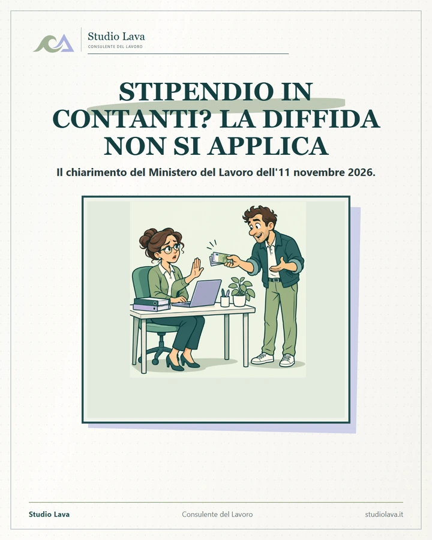

Stipendio in contanti e diffida amministrativa
Il Ministero del Lavoro chiarisce se la diffida si applica al pagamento diretto in contanti. Il carosello spiega anche perché la firma sul cedolino, da sola, non prova il versamento.
Dalla prima assunzione alla gestione delle paghe, affianchiamo la tua azienda nelle scelte che riguardano le persone e il costo del lavoro.
Dal nostro Studio

Il Ministero del Lavoro chiarisce se la diffida si applica al pagamento diretto in contanti. Il carosello spiega anche perché la firma sul cedolino, da sola, non prova il versamento.
Lo Studio
A Torino, Giovanni Lava e i suoi collaboratori seguono le aziende nella gestione delle paghe, negli adempimenti mensili e nelle scelte che riguardano il personale.
Conosci i professionistiTitolare dello Studio
Consulente del Lavoro iscritto dal 2013 all'Ordine dei Consulenti del Lavoro di Torino. Esperienza pluriennale nell'amministrazione del personale e nel servizio payroll. Docente in corsi di payroll e gestione dell'amministrazione del personale. Ha ricoperto la carica di Consigliere dell'Associazione Giovani Consulenti del Lavoro di Torino.
Insieme al proprio team, garantisce un'assistenza a 360° nell'ampio e complesso ambito della normativa giuslavoristica, previdenziale e assistenziale.
Abilitata Consulente del Lavoro
Collaboratrice dello Studio, abilitata all'esercizio della professione di Consulente del Lavoro. Apporta competenza e rigore nell'amministrazione del personale e nella gestione degli adempimenti giuslavoristici.
Praticante Consulente del Lavoro
Praticante iscritto presso l'Ordine dei Consulenti del Lavoro. Supporta lo Studio nelle attività di elaborazione paghe, gestione pratiche e consulenza alle aziende clienti, consolidando la propria esperienza professionale.
Contatti
Corso Francia 335, Torino
Contatti
Descrivici la tua esigenza. Ti ricontatteremo per parlarne.